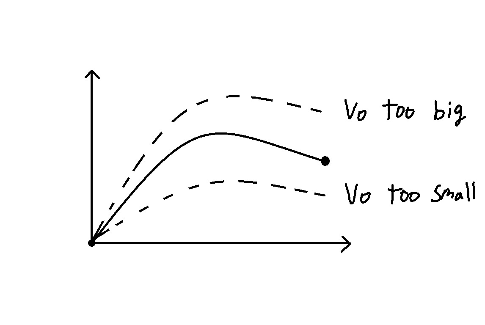

7.7.1. Initial value problemsWe learned previously how to solve systems of first-order ODEs:
(7.179) \[\begin{equation}
\vv{y}' = \vv{f}(t, \vv{y})
\end{equation}\]
using Euler’s method. However, we didn’t learn what to do with higher-order
derivatives. If a second-order ODE can be written in explicit form and as an
initial value problem:
(7.180) \[\begin{equation}
y'' = f(t, y, y'), \quad y(0) = y_0, \quad y'(0) = y_0'
\end{equation}\]
it can be solved by conversion to a system of first-order ODEs!
Conversion to a system of first-order ODEs
For the explicit second-order ODE \(y'' = f(t, y, y')\) , let \(y_1 = y\) and
\(y_2 = y'\) . Then:
(7.181) \[\begin{align}
y_1' &= y_2, & y_1(0) &= y(0)\\
y_2' &= f(t, y_1, y_2), & y_2(0) &= y'(0)
\end{align}\]
Note: this procedure actually works for even higher-order ODEs! The size of the
system is equal to the highest derivative.
Let’s verify this works using an ODE that we can solve analytically. Consider:
(7.182) \[\begin{equation}
y'' + y' - 2y = 0 \quad y(0) = 4, \quad y'(0) = -5
\end{equation}\]
We previously showed using the
characteristic polynomial
(7.183) \[\begin{equation}
y = e^x + 3e^{-2x}
\end{equation}\]
Now, let’s resolve by converting to a system. Let \(y_1 = y\) and \(y_2 = y'\) .
Then, the ODE is equivalent to
(7.184) \[\begin{align}
y'' &= 2y - y' \\
y_2' &= 2y_1 - y_2
\end{align}\]
and the system of ODEs is:
(7.185) \[\begin{align}
y_1' &= y_2, & y_1(0) &= 4 \\
y_2' &= 2y_1 + -y_2, & y_2(0) &= -5
\end{align}\]
This system of ODES is in the form \(\vv{y}' = \vv{A}\vv{y}\) with
(7.186) \[\begin{equation}
\begin{bmatrix} 0 & 1 \\ 2 & -1\end{bmatrix}
\end{equation}\]
The eigenvalues of the matrix are
(7.187) \[\begin{align}
|\vv{A}-\lambda \vv{I}|
&=\begin{vmatrix}-\lambda & 1\\ 2& -1-\lambda \end{vmatrix} \\
&=\lambda(\lambda+1)-2 \\
&= \lambda^2 + \lambda - 2 \\
&= (\lambda-1)(\lambda+2) = 0
\end{align}\]
giving \(\lambda_1 = 1\) and \(\lambda_2 = -2\) . The corresponding eigenvectors are:
(7.188) \[\begin{align}
\vv{A} - \lambda_1 \vv{I} &=
\begin{bmatrix} -1 & 1 \\ 2 & -2 \end{bmatrix} \to \vv{x}_1 =
\begin{bmatrix}1 \\ 1\end{bmatrix} \\
\vv{A} - \lambda_2 \vv{I} &=
\begin{bmatrix} 2 & 1 \\ 2 & 1 \end{bmatrix} \to \vv{x}_2 =
\begin{bmatrix}1 \\ -2\end{bmatrix}
\end{align}\]
Hence,
(7.189) \[\begin{equation}
\vv{y} = c_1 e^x \begin{bmatrix}1 \\ 1\end{bmatrix} +
c_2 e^{-2x} \begin{bmatrix}1 \\ -2\end{bmatrix}
\end{equation}\]
Apply the initial conditions by solving \(\vv{X} \vv{c} = \vv{y}(0)\)
(7.190) \[\begin{align}
\begin{bmatrix}1 & 1 & 4 \\ 1 & -2 & -5 \end{bmatrix}
\begin{matrix}\vphantom{R_1} \\ -R_1\end{matrix}
&\to \begin{bmatrix}1 & 1 & 4 \\ 0 & -3 & -9 \end{bmatrix}
\begin{matrix}\vphantom{R_1} \\ \div -3\end{matrix} \\
&\to \begin{bmatrix}1 & 1 & 4 \\ 0 & 1 & 3 \end{bmatrix}
\begin{matrix} -R_2 \\ \vphantom{R_2}\end{matrix} \\
&\to \begin{bmatrix}1 & 0 & 1 \\ 0 & 1 & 3 \end{bmatrix}
\end{align}\]
so
(7.191) \[\begin{equation}
\vv{y} = e^x \begin{bmatrix}1 \\ 1\end{bmatrix} +
3 e^{-2x} \begin{bmatrix}1 \\ -2\end{bmatrix}
\end{equation}\]
or equivalently
(7.192) \[\begin{equation}
y = y_1 = e^x + 3 e^{-2x}
\end{equation}\]
The solution is the same as before! Note that in the process, we also obtained
(7.193) \[\begin{equation}
y' = y_2 = e^x - 6 e^{-2x}
\end{equation}\]
which is consistent with direct differentiation of \(y\) .
Example: Forced oscillator
A mass m on a Hookean spring (constant k ) is experiences both a drag force
(friction coefficient \(\gamma\) ) and an oscillating external force
\(F \cos \omega t\) . Its position x obeys the differential equation
(7.194) \[\begin{equation}
m x'' + \gamma x' + kx = F \cos\omega t, \quad x(0) = x_0, \quad x'(0) = v_0
\end{equation}\]
where \(x_0\) and \(v_0\) are the initial position and velocity of the mass. Write
this second-order ODE as a system of first-order ODEs.
Let \(y_1 = x\) and \(y_2 = x'\) . Then, the ODE is equivalent to:
(7.195) \[\begin{align}
x'' = \frac{1}{m}\left(- kx - \gamma x' + F\cos\omega t\right) \\
y_2' = \frac{1}{m}\left(- k y_1 - \gamma y_2 + F\cos \omega t \right)
\end{align}\]
so
(7.196) \[\begin{align}
y_1' &= y_2, & y_1(0) &= x_0 \\
y_2' &= \displaystyle
\frac{1}{m}\left(-\gamma y_2 - k y_1 + F\cos \omega t \right), &
y_2(0) &= v_0
\end{align}\]
7.7.2. Boundary value problemsWe can solve initial value problems for second-order ODEs by converting to a
system and using methods we know. What about boundary value problems?
Let’s say we want to solve:
(7.197) \[\begin{equation}
y'' + y = 0, \quad y(0) = 0, \quad y(\pi/6) = 4
\end{equation}\]
Using normal approach:
(7.198) \[\begin{align}
y &= c_1 \cos x + c_2 \sin x \\
y(0) &= c_1 = 0\\
y(\pi/6) &= c_2 \frac{1}{2} = 4 \to c_2 = 8\\
\end{align}\]
so,
(7.199) \[\begin{equation}
y = 8 \sin x
\end{equation}\]
What if we needed to do this numerically? Try converting to system using
\(y_1 = y\) and \(y_2 = y'\) , so
(7.200) \[\begin{equation}
y'' + y = 0 \to y_2' = -y_1
\end{equation}\]
and
(7.201) \[\begin{align}
y_1' &= y_2, & y_1(0) &= 0 \\
y_2' &= -y_1, & y_2(0) &= a
\end{align}\]
where a is an unknown value that we need to figure out so that \(y(\pi/6) = 4\) .
We will use the shooting method to determine a . The idea is to treat the
boundary condition at the other value of x as a function of a , then vary a
using a root-finding approach.

This boundary-condition function is the numerical integration of the system of
ODEs! Bisection search is well-suited for solving for a because it is stable
and doesn’t require a derivative.
Example: Reaction-diffusion with second-order reaction
We are solving a reaction-diffusion problem with a second-order reaction:
(7.202) \[\begin{equation}
D \dd{2}{c}{x} - k c^2 = 0, \quad c(0) = c_0, \quad -D c'(L) = 0
\end{equation}\]
Formulate in a form suitable for numerical solution using the shooting method.
First, rewrite as a system of first-order ODEs using \(y_1 = c\) and \(c_2 = c'\) .
The ODE is
(7.203) \[\begin{equation}
c'' - \frac{k}{D}c^2 \to y_2' = \frac{k}{D} y_1^2
\end{equation}\]
so
(7.204) \[\begin{align}
y_1' &= y_2, & y_1(0) &= c_0 \\
y_2' &= \frac{k}{D} y_1, & y_2(0) &= a
\end{align}\]
where a is the unknown value of \(y_2(0)\) . Vary a until
(7.205) \[\begin{equation}
-D c'(L) = 0 \to y_2(L) = 0
\end{equation}\]
{kind=link}